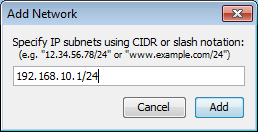
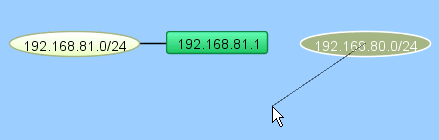
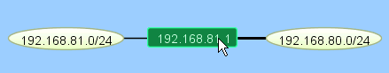

Adding Networks to the Map
InterMapper uses "network ovals" to represent a "subnet" - a range of IP addresses. It uses these networks as graphical connecting points for all the devices on the subnet. When InterMapper places an SNMP-speaking device on a map, it automatically adds a network for each of its interfaces.
You can also add new networks manually.


Add Subnet... window.
Enter an IP subnet (in the form x.x.x.x/yy).
To add a new network:
- From the Insert menu, choose Network... An Add Network window appears, as shown below.
- Enter the IP subnet information or range and click OK. For more information on IP addresses
and subnets, see About
IP.
The network is added to the map as an oval, labeled with the network information you entered. Any devices that belong to that subnet are automatically connected to the new network.
Note: Adding a subnet does not automatically initiate the discovery process. To scan the new network, right-click the new network oval and choose Scan Network... For more information, see Scanning a Network.
Adding and Removing Links
InterMapper may not connect devices to the proper network in every case. In such a case, you can make the connection manually.
To add a link manually:
- Make sure the map is in Edit mode.
- Right/Ctrl-click one of the objects you want to link to another.
- From the menu that appears, click Attach To. A line appears, connecting the selected object to your mouse cursor, as shown:
 - Click the object you want to connect to. A link is created between the two objects:

Note: Once a manual connection has been established, InterMapper remembers it. You can drag manually-connected items around the map, and they work just like those links InterMapper has created automatically.
To remove a manually-connected link:
- Make sure the map is in Edit mode.
- Right/Ctrl-click the link and choose Remove. The link disappears.